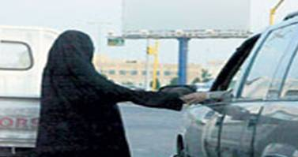

|
|

خشونت خانگی در عربستان دیگر خصوصی نیست
شنبه7 آذر 1388
 تغییر برای برابری : کمتر از یک ماه قبل، علی الهناکی مدیر امور اجتماعی استان مکه اعلام کرد که موارد خشونت علیه زنان در این استاد از ۶۵۰ مورد کمتر بوده است. او به خبرنگار روزنامه جده، گفت که آمار دقیقی در این باره وجود ندارد ولی با یک تخمین میشود گفت که موارد خشونت تا به حال از ۶۵۰ مورد تجاوز نکرده. او در جواب به این سوال که پس چرا این اداره اقدام به تشکیل ۱۷ کمیته مستقل برای رسیدگی به اینگونه امور کرده است، جوابی نداد.
صبریه جوهر - روزنامه نگار - میگوید که این آمار توهینی است به هر زن و کودک سعودی، چه مورد خشونت واقع شده باشند و چه نه. او سوال میکند که آیا واقعا ممکن است در یک کشور ۲۷ میلیون نفری، آماری از خشونت خانگی وجود نداشته باشد یا اگر وجود دارد، اینقدر کم باشد؟ او به گفته عبدالعزیر الدخیل رجوع میکند. این وکیل متخصص در امورد خانواده میگوید «اگر به شما گفتند که ۱۰ مورد سوء استفاده اتفاق افتاده، بدانید که بدون شک ۱۰۰۰ مورد مشابه وجود دارد که در سکوت دفن شدهاند.»
بنا به گفته العزیز، یک مشکل در عربستان سعودی نبود تعریف دقیق از خشونت خانوادگی و نبود خط مرز بین قانون مربوط به سرپرستی زنان توسط مردان و اجازه اعمال خشونت علیه زنان توسط مردان است.
البته جامعه عربستان - بخصوص در نسل جدید - شاهد تغییرات بیشتری است. در حادثهای در سال ۲۰۰۴، همسر یکی از مجریان تلویزیون او را مورد ضرب و شتم شدید قرار داد که در نتیجه آن به صورت این مجری، صدمات جدی وارد شد. شهرت این زن و شناخته بودن صورت او توسط شهروندان سعودی، باعث انعکاس شدید خبر در رسانهها شد که در نهایت موجب شد مفهوم «خشونت خانگی» از پشت درهای بسته خانهها، به گفتگوی روزمره مردم و حتی تا حدی رسانهها نیز راه پیدا کند.
در حال حاضر کمپینهای مختلفی در عربستان وجود دارد از جمله فعالیت نویسنده عرب سعودی، ریما ابراهیم برای ساخت یک خانه امن تا بتواند به قربانیان خشونت خانگی و کسانی که همسرانشان آنها را رها کردهاند، خدمات حمایتی ارائه دهد. پروژهها مشابه در شهرهای مختلف سعودی در حال اجرا هستند.
در حال حاضر، سوال اصلی این نیست که آیا خشونت خانگی در عربستان وجود دارد یا نه. سوال اصلی در حال حاضر این است که با این خشونت چه باید کرد. یک مشکل بزرگ برداشت مردم از خودشان به عنوان مسلمانان خوب است. حتی اگر افراد خشونتی بکنند که در اسلام هم پذیرفته نیست، در نهایت هم عامل خشونت و هم دادگاه و هم کلیت حکومت، ترجیح میدهد مساله بدون سر و صدا یا حتی اعلام رسمی جرم خاتمه پیدا کند تا اسلامیترین کشور جهان بتواند چهره تمیزی از خود ارائه بدهد. در این کشورها آدمها و حکومت به سادگی زیر بار اعلان رسمی وجود خشونت خانگی نمیروند. اما مواردی مثل اتفاق ۲۰۰۴ و فشار بیشتر و بیشتر جامعه جهانی در حال ایجاد تغییر در این وضعیت است. حالا با تلاشهای برخی وکلا و چند زن روزنامهنگار که خارج از کشور زندگی میکنند، مساله برای عموم روشنتر شده و برای تمیز ماندن، دیگر نمیشود فقط مساله را مخفی کرد. در حال حاضر حکومت در حال بررسی قوانینی است برای اصلاح وضعیت خانوادهها و جلوگیری از بخشی از خشونت و حتی در حال حاضر، تا حدی از ایجاد خانههای امن برای زنان آسیب دیده هم پشتیبانی میشود. این قدم بزرگی در این کشور کاملا سنتی است.
آگاهی زنان سعودی از حقوقشان و از حقوق دیگر زنان در جاهای دیگر دنیا، باعث بهبود وضعیت آنها شده اما هنوز این کشور تا رسیدن به استانداردهای پذیرفته شده در جهان، فاصلهای بسیار بسیار زیاد دارد. هنوز قانون سرپرستی جاری است که طی آن هر زن باید زیر نظر یک مرد زندگی و فعالیت کند و هنوز هزاران کارگر و مستخدم خارجی زیر شکنجه روزمره «کارفرماها» زندگی میکنند بدون اینکه حق برگشت به کشورشان را داشته باشند. این کشورهای قدمهایی برداشته اما بدون فایق آمدن بخش مدرن بر بخش سنتی دولت، ادامه مسیر بسیار کند خواهد بود. خوشبختانه این کشمکش تا این لحظه به نفع بخش مدرن حاکمیت به پیش رفته.
منابع:
 وبلاگ صبریه
وبلاگ صبریه
 بی بی سی
بی بی سی
 عکس از سایت چهره دیگر عربستان سعودی
عکس از سایت چهره دیگر عربستان سعودی